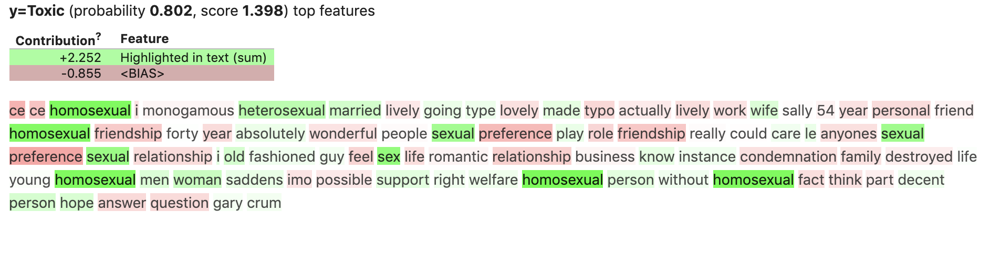

As Machine Learning is increasingly used in our day to day lives, issues surrounding the reinforcement of existing biases against minority identities are increasingly important. We are exploring this from the scope of online toxic comment classification
Classical ML classification models perform very well in terms of accuracy when identifying toxic comments. However these methods have a tendency to over-weight words that refer to a particular identity (e.g. Black, Muslim, LGBTQ...) leading to non-toxic examples mentioning these identites being classified as toxic (False Positives). This can be somewhat ameliorated via techniques such as hyperparameter optimization but this represents a fundamental issue with these models.
Our aim is to train a neural network model, primarily an LSTM model, to classify toxic comments. RNN's such as LSTM are optimally suited to tackling this problem due to their ability to parse through sequences, such as a comment. The main idea here is that an RNN should be better at deciphering the underlying *context* of a sequence based on the word-embeddings passed in.
We compare the results of our LSTM model and a few classical ML models to suggest areas of further improvements.
To highlight issues related to bias with classic ML models, we have run our Logistic Regression model through the ELI5 package to help visualise these
The comment above from our test set, which has been put through a standard NLP processing pipeline fitted on training set, was originally labelled as being non-toxic. However the logistic model missclassified this as toxic by focusing in on the word 'homosexual' (highlighted in green) as being a clear indicator of toxicity.